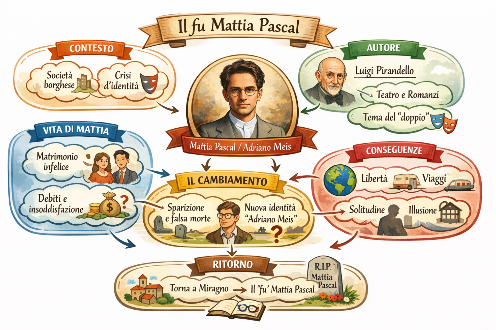

Pubblicato a puntate (1904) su “Nuova Antologia”, scritto quasi sempre di notte mentre Pirandello vegliava la moglie malata. In volume nel 1910.
Fuga → Montecarlo → “morte” per errore → nuova identità (Adriano Meis) → ritorno impossibile.
Genesi e pubblicazione
Per far fronte alla precaria situazione economica della sua famiglia, Pirandello accettò di scrivere un romanzo per la rivista “Nuova Antologia”, che lo pubblicò a puntate tra l’aprile e il giugno del 1904. L’autore lo compose quasi sempre di notte, mentre vegliava la moglie gravemente malata e senza un piano prestabilito.
L’opera uscì poi integralmente nel 1910.
Trama
Mattia Pascal, nato in una famiglia benestante e rimasto presto orfano, vede andare in rovina il proprio patrimonio a causa dei furti dell’amministratore...

Significato e ricezione
Con questo romanzo Pirandello segnò il passaggio dal naturalismo ottocentesco al romanzo di introspezione psicologica...